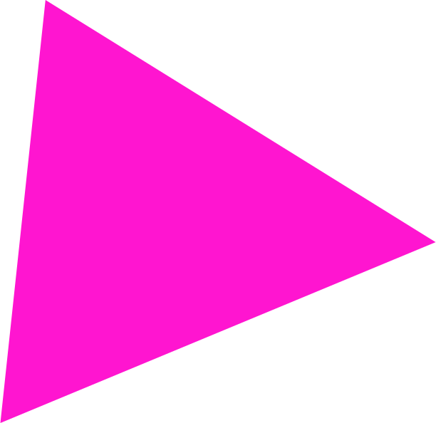

jquery.scroll.parallax
このプラグインには3つの機能があります。
- Timing
- 任意の位置を通過したときに関数を実行する
- Speed
- スクロール量に応じてcssを変化させる
- Fit
- 移動距離に応じてcssを変化させる
Install
npm install jquery.scroll-parallax
yarn add jquery.scroll-parallax
Timing
任意の位置を通過したときに関数を実します。
スクロールしたときに上から下、下から上に向かって
通過したときにそれぞれ関数を実行します。
$(el).parallaxTiming([
function(e) {
console.log(’上から下’)
},
function(e) {
console.log(’下から上’)
}
])
Speed
任意の位置を通過したときに関数を実行します。
スクロールしたときに上から下、下から上に向かって
通過したときにそれぞれ関数を実行します。
$(el).parallaxSpeed({
style: 'top',
speed: 2,
fixScrollPosition: 500
})

Fit
移動距離に応じてcssを変化させます。
スクロールがstartからendまで移動したときに
fromStyleからtoStyleにcssが変化していきます。
easingを指定することも可能です。
$(el).parallaxFit([{
start: 0,
end: 200,
fromStyle: {
opacity: 0
},
toStyle: {
opacity: 1
},
easing: 'easeOutCubic'
}]